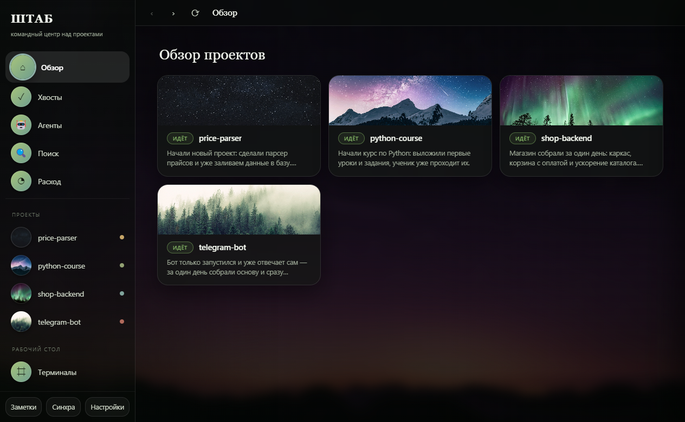

Что происходит в каждом проекте — человеческим языком. Живой ИИ-помощник в каждой папке. Задачи агентам в фоне: дал задачу, ушёл, вернулся к готовому.
Десктоп · Windows и macOS · всё локально · твоя подписка на ИИ

Проектов много: работа, пара ботов, эксперимент, курс. Про каждый помнишь всё меньше. Терминалы разбросаны, помощник в каждой папке свой, «что я тут делал в прошлый вторник» — вспоминаешь по коммитам. Инструменты, которые есть на рынке, смотрят внутрь одного репозитория. Никто не отвечает на главный вопрос: что вообще происходит и за что взяться?
Не «14 коммитов в 3 ветках», а «Бот запущен, ждём первую покупку. Дальше — проверить лимиты». Выжимку делает ИИ из журнала проекта или истории коммитов — сам, когда файлы меняются.
Все «что дальше» со всех проектов — одним списком. Пульт недоделок, а не десять папок.
Живой Claude Code, Codex или Gemini прямо во вкладке проекта. Нужно несколько сразу — стена терминалов: 2–4 помощника рядом, каждый в своём проекте.
Дал задачу → закрыл окно → пришло уведомление → посмотрел изменения → принял. Агент работает в отдельной ветке и не трогает твой код, пока ты не нажмёшь «Принять».
«Где у меня было про парсер цен?» — ИИ отвечает по всем проектам сразу и говорит, где смотреть.
Свежий отчёт, хвост лога, встроенный дашборд — вкладка описывается одним файлом, без программирования.
Сколько токенов съел каждый проект за неделю и месяц. Видно, куда уходит лимит подписки.
Тихий git pull всех проектов при запуске и возврате в окно. Светофор «всё ли уехало», чтобы спокойно уйти на другой компьютер.
| ШТАБ | Обычные мишн-контролы | |
|---|---|---|
| Охват | все проекты сразу | один репозиторий |
| Статус | человеческим языком | ветки и диффы |
| Windows | да | часто только macOS |
| Без GitHub | обычные локальные папки | нужна удалёнка |
| Не-код проекты | курс, контент, документы | только код |
| Данные | только на твоём диске | часто облако |
Нужны Node.js, Python и хотя бы один ИИ-помощник в консоли.
macOS: двойной клик по Поднять-на-маке.command.
Windows: npm install && npm start.
При первом запуске укажи папку, внутри которой лежат проекты. Дальше ШТАБ найдёт их сам.
Открывай проект: статус, терминал, файлы, живой сайт — всё во вкладках одного окна.